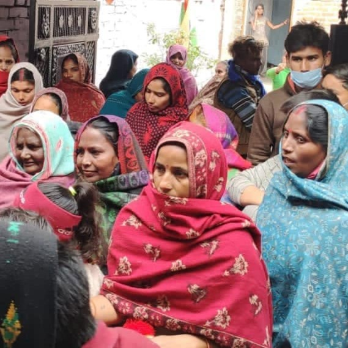
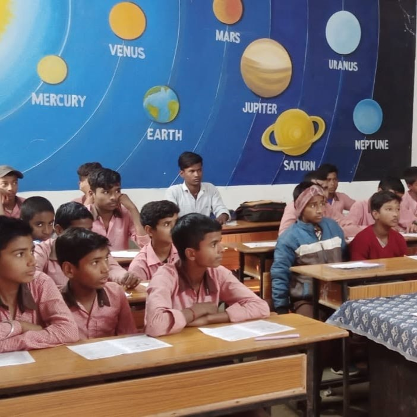
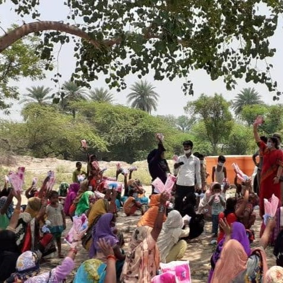
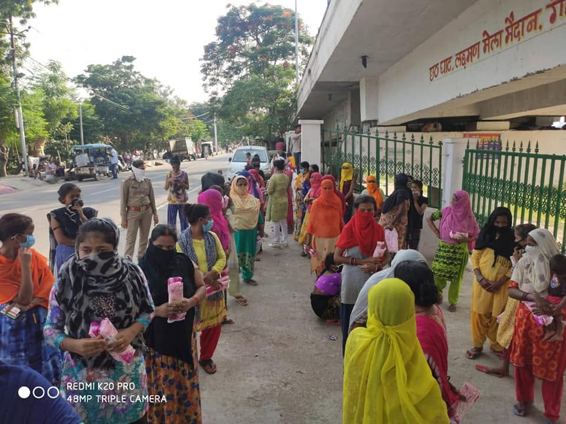
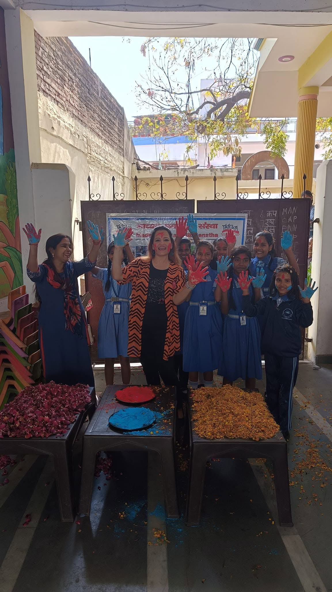
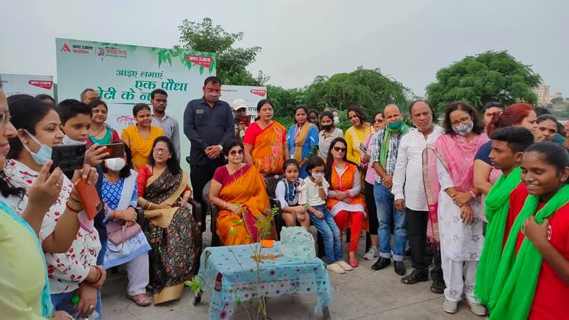
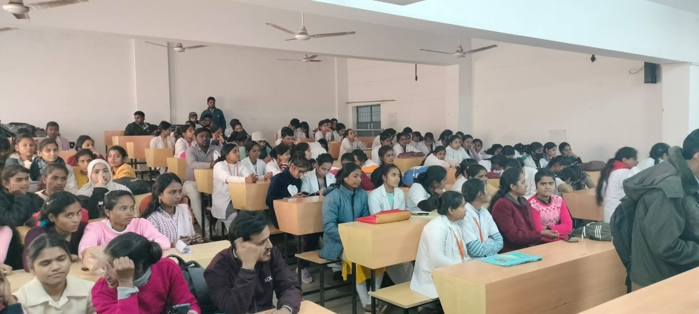
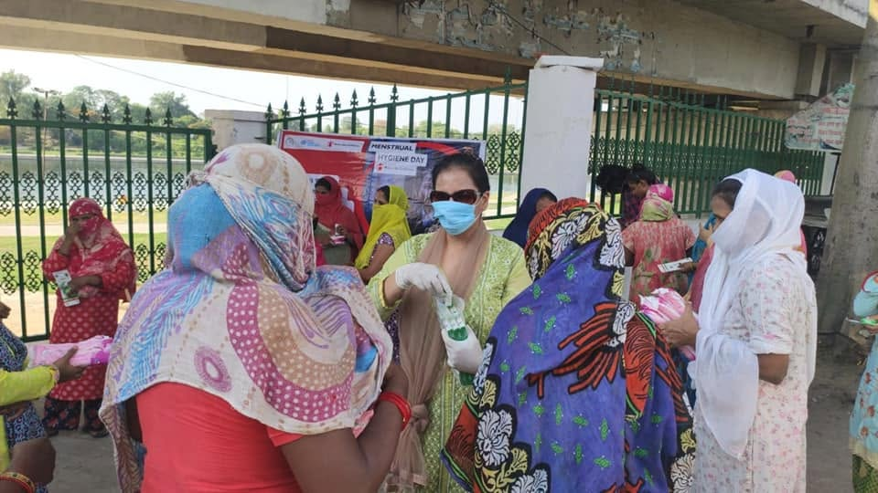

What we do
Eight connected areas of grassroots work, each built around the everyday needs of the families we serve.
Women Empowerment & Development
Our field initiatives focus on gender equality, financial independence and social rights. Working directly inside Lucknow's slum communities, we have supported over 2,000 women through focused empowerment and livelihood programmes, helping them build the confidence and the means to make decisions for themselves and their families.

Education & Literacy
We provide both formal and non-formal educational opportunities to underprivileged children, helping them stay in school and integrate into the mainstream of development rather than falling outside it. Our approach stays close to what each child and family actually needs, rather than a single fixed programme.

Vocational & Technical Training
Skill development programmes for youth and young women, including computer literacy, sewing and tailoring, are designed to boost real employability. These are practical skills that a young person can use to earn an income soon after training, not abstract qualifications.

Health, Nutrition & HIV/AIDS Awareness
Local health check-up camps bring basic healthcare access to communities that would otherwise have to travel far for it, alongside targeted awareness campaigns on nutritional health and HIV/AIDS prevention.

Micro-Finance & Self-Help Groups
We mobilise women and rural labourers into Self-Help Groups to promote micro-savings and run Income Generation Programmes. These groups give members a place to save safely, borrow responsibly, and build a small enterprise of their own.

Agriculture & Rural Development
We support low-income farmers with natural resource management, sustainable food practices and modern agricultural techniques, helping households move toward a steadier and more resilient source of income from their land.

Advocacy, Human Rights & RTI
We work to raise legal literacy and Right to Information advocacy, helping marginalised citizens understand and claim their fundamental human and labour rights, rather than leaving them unaware of protections that already exist for them.

Environment & Sanitation
We run awareness programmes on conservation, water supply and sanitation, and work with communities on sustainable practices, alongside our health and agriculture programmes rather than as a separate concern.

Campaigns and events we have run
Alongside these eight areas, we regularly organise focused awareness campaigns and community events on specific issues.
These programmes run on the support of people like you.
A donation, a corporate partnership or your own time as a volunteer all make a direct difference to the families we work with.